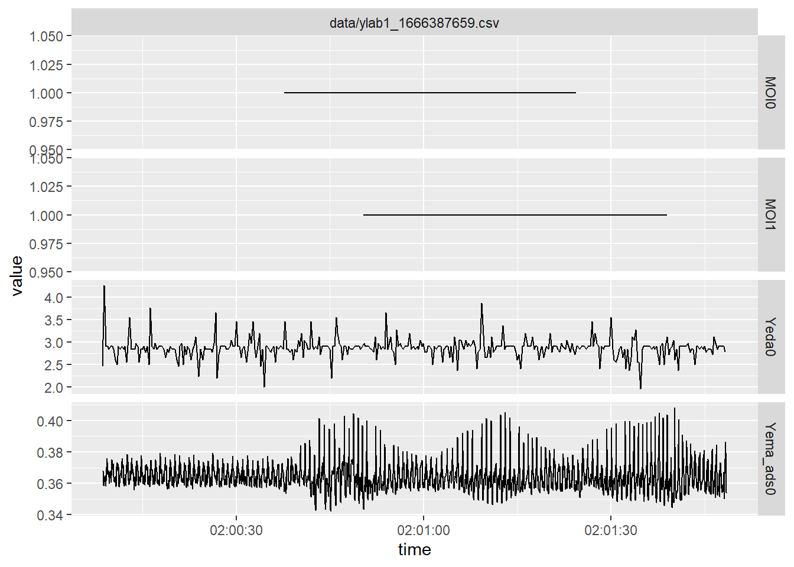

#' Read Ylab data files
#'
#' Reads a data file created by Ylab, and does some cleanup and
#' preprocessing.
#'
#' @param {path} path to the data file
#' @param {col_types} list of named column definitions. The list is
#' passed to the `col_types` argument of `readr::read_csv(...)`,
#' while the names are passed to the `col_names` argument.
#' @return {tibble} a tibble with four columns: `source`, `time`,
#' `sensor` and `value`.
read_ydata <-
function(path,
# data files have three columns:
# - time (in seconds) since the device was powered
# - sensor ID/name (defined in the script)
# - value of the measurement
#
# We could let R decide how to load the data, and it
# would probably do a good job guessing the data types,
# but it's good practice to explicitly define what we
# expect.
col_types = list(time = col_double(),
sensor = col_character(),
value = col_double())) {
# read the data, using the column names and data types defined
# in the function definition.
read_csv(path,
col_names = names(col_types),
col_types = col_types) %>%
# add a column identifying which file each measurement was
# read from, and 'cast' the time into a form that tidy
# functions will correctly recognize and treat as a time
# format.
#
# Note that the device only knows the time since it was
# powered on - and not the 'actual' time. If we create multiple
# datasets and turn the device off and on between datasets,
# the time will reset. We may have to manually add an 'origin'
# or a baseline time to avoid measurements from different
# sources overlapping on the timeline.
mutate(source = path,
time = lubridate::as_datetime(time)) %>%
# return only the columns we explicitly defined, dropping
# any extra columns that may have been present in the data
select(source, time, sensor, value) %>%
# arrange measurements by time and sensor, if they weren't
# already.
arrange(time, sensor)
# R returns the result of the last expression in a function
# if there is no explicit `return()` statement. In this case,
# that means the result of the read - mutate - select - arrange
# pipeline.
}CORY_0: Visualizing multi-sensor data streams
Results
Creating a helper function
We define a helper function to read data files generated by Ylab, and do a bit of pre-processing.
Batch reading the data
As Data Scientists, we don’t want to have to manually write a script to load each data file. Let’s instead write some code to load all data files in a directory - no matter how many there are.
# We use the 'dir(...)' function to get a list of
# files in a given location. In this case, the 'data'
# folder next to this script.
files <- dir("data/", full.names = T)
# I only have one file on this test
files[1] "data/ylab1_1666387659.csv"# assuming we have anywhere from one to many files:
data <-
# take our list of filepaths...
files %>%
# And 'map' them onto the `read_ydata` function,
# combining the results in a single 'data frame'.
#
# Note that 'df' here is historical, the function
# actually returns a 'tibble'. Both formats are
# different implementations of tabular data, and
# the difference is _usually_ not important.
map_df(read_ydata) %>%
# The data from each file is put in order of the
# files, so lets make sure they are in a predic-
# table order again.
arrange(source, time, sensor)
# we now have a single data frame containing all the
# measurements of each of the data files in the 'data'
# folder.
data# A tibble: 4,417 × 4
source time sensor value
<chr> <dttm> <chr> <dbl>
1 data/ylab1_1666387659.csv 1970-01-01 02:00:08 Yeda0 2.46
2 data/ylab1_1666387659.csv 1970-01-01 02:00:08 Yema_ads0 0.368
3 data/ylab1_1666387659.csv 1970-01-01 02:00:08 Yema_ads0 0.364
4 data/ylab1_1666387659.csv 1970-01-01 02:00:08 Yema_ads0 0.361
5 data/ylab1_1666387659.csv 1970-01-01 02:00:08 Yema_ads0 0.360
6 data/ylab1_1666387659.csv 1970-01-01 02:00:08 Yema_ads0 0.359
7 data/ylab1_1666387659.csv 1970-01-01 02:00:08 Yema_ads0 0.359
8 data/ylab1_1666387659.csv 1970-01-01 02:00:08 Yema_ads0 0.358
9 data/ylab1_1666387659.csv 1970-01-01 02:00:08 Yema_ads0 0.359
10 data/ylab1_1666387659.csv 1970-01-01 02:00:08 Yeda0 4.27
# … with 4,407 more rowsSummarizing observations
Before we move on, let’s have a quick look at what kind of data we have.
# let's see how many measurements we have for each
# sensor (or moment of interest).
data %>%
# group measurements by source and sensor name
group_by(source, sensor) %>%
# summarize each group by counting the number of
# measurements
summarize(n = n())`summarise()` has grouped output by 'source'. You can override using the
`.groups` argument.# A tibble: 4 × 3
# Groups: source [1]
source sensor n
<chr> <chr> <int>
1 data/ylab1_1666387659.csv MOI0 3
2 data/ylab1_1666387659.csv MOI1 3
3 data/ylab1_1666387659.csv Yeda0 383
4 data/ylab1_1666387659.csv Yema_ads0 4028# note that because this is a very common operation,
# tidyr includes a shorthand function for it:
data %>% count(source, sensor)# A tibble: 4 × 3
source sensor n
<chr> <chr> <int>
1 data/ylab1_1666387659.csv MOI0 3
2 data/ylab1_1666387659.csv MOI1 3
3 data/ylab1_1666387659.csv Yeda0 383
4 data/ylab1_1666387659.csv Yema_ads0 4028Plotting a timeline
Let’s start with a naive plot, putting time on the x axis, sensor values on the y axis, using a line to track values over time, and distinguishing different sensors with different colours.
data %>%
ggplot(aes(x = time, y = value, colour = sensor)) +
geom_line()That works, but it’s not very elegant. Our first problem is the different ranges of different sensors. We could work with dual scales, but this is generally considered a bad idea™ (and in fact, is deliberately very difficult to do in ggplot). A simple and effective alternative is to use facets instead.
data %>%
ggplot(aes(x = time, y = value)) +
facet_grid(
# create a tabular grid showing sources in the columns (we
# have only one here), and sensors in the rows.
#
# We use 'free_y' in the `scales` argument to allow ggplot
# to pick an appropriate scale for the y axes on each plot.
# If we didn't leave the y axis 'free', we'd have the same
# scale problem as on the first plot.
sensor~source, scales = "free_y") +
geom_line()
That’s better, but the moments of interest aren’t actually continuous data streams, and visualizing them as such makes little sense. Let’s remove them, and visualize them as markers identifying specific points in time instead.
# first, remove the moments of interest from our plot
plot <- data %>%
# match any rows where the sensor name _does not_ start with "MOI"
filter(sensor %>% str_starts("MOI", negate = TRUE)) %>%
ggplot(aes(x = time, y = value)) +
facet_grid(sensor ~ source, scales = "free_y") +
geom_line()
plot# then, add a new layer that _only_ uses the moment of interest
# data.
moi_data <- data %>% filter(sensor %>% str_starts("MOI"))
plot +
geom_vline(
aes(xintercept = time, colour = sensor),
data = moi_data
)Okay…. that’s…. better? It’s still not what we wanted, though. It looks like we’ll need to further massage the data. As moments of interest and sensor measurements are interpreted in different ways, we should probably distinguish between them. The fastest way to do that is to simply rename the column.
moi_data_v2 <- moi_data %>%
rename(moi = sensor)
plot +
geom_vline(
aes(xintercept = time, colour = moi),
data = moi_data_v2
)Better! We can now easily see overall patterns in both sensors, and relate them to specific moments of interest.
Transforming variables
So far, we’ve been visualizing raw sensor data. One might wonder if this actually makes sense. For example, consider the ADS sensor. If we were to zoom in, we can see that this sensor shows changes in blood pressure with enough accuracy to give a nice heart-rate plot.
data %>%
# only show data from the 'Yema_ads0' sensor
filter(sensor == "Yema_ads0") %>%
# take only the first 200 measurements (about 5 seconds)
head(200) %>%
# simple line plot
ggplot(aes(x = time, y = value)) +
geom_line()While this looks somewhat satisfying, we are probably more interested in second-order variables: beats per minute, erratic changes in heart rhythm, average blood pressure, and so forth.
Such transformations will be …. the topic of the next section? A different workshop? Left as an exercise to the reader?